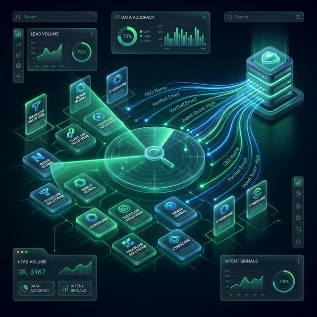
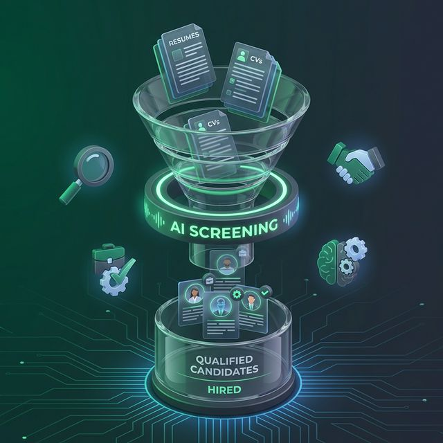

9Design builds AI systems that research, verify, follow up, organize work and handle repetitive business tasks in the cloud—while keeping important decisions with a human.
Where are customers being lost? What is not getting followed up? What work keeps repeating?
We connect the data, tools, rules and AI needed to handle that job consistently.
Routine work can run automatically. High-impact decisions and exceptions get escalated for review.
$2,000
Useful when generic outreach is getting ignored and manual research takes too long.

$2,000
Useful when your team spends too much time hunting for companies and people to contact.
$3,000
Useful when content production is slow and your team needs a repeatable research-to-draft system.
$4,500
Useful when staying consistent with a newsletter takes more time than the business can spare.

$4,000
Useful when hiring coordination is consuming time that should be spent talking to strong candidates.
These are larger reusable agent systems designed to be configured and onboarded for a business—not just one fixed automation.
Best for a company that wants a custom digital workforce built around its own workflow instead of buying one pre-defined automation.
Ask about a custom workforceDesigned as a reusable outbound opportunity system that can be configured for a customer, campaign lane and sending rules.
Ask about this agentThis is the natural customer-ready combination of the lead-finding and personalization systems already shown above. It is presented as a configurable workforce, not a claim that a separate finished repository exists yet.
Design this workforceThe products and Universal agents above use the same basic model: connect the right data, verify what matters, let software handle routine actions, monitor the result and escalate exceptions to a person.
Choose a packaged system, start with a Universal agent, or have 9Design build a workforce around the way your business actually operates.